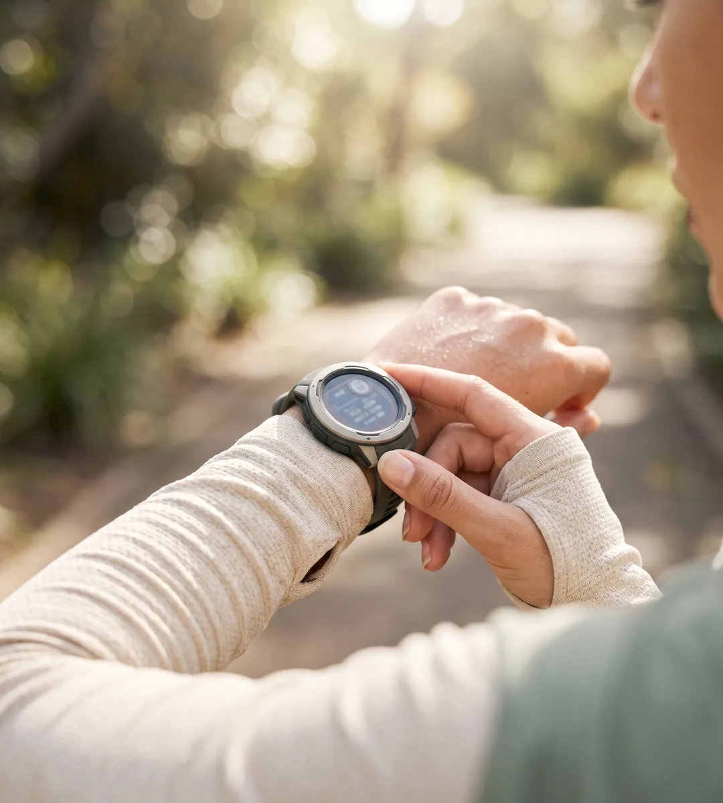
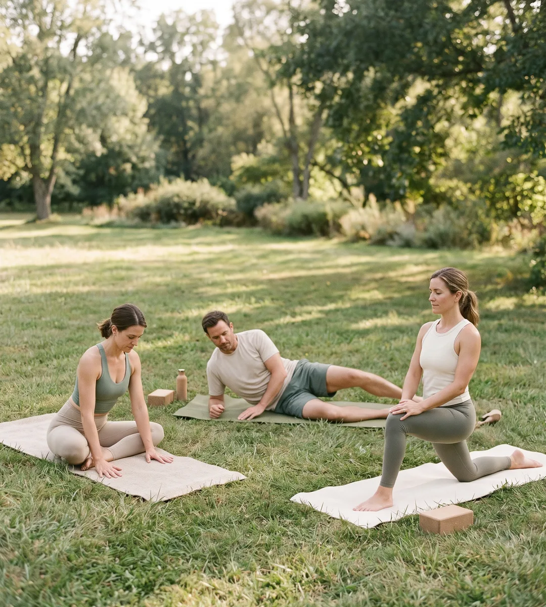
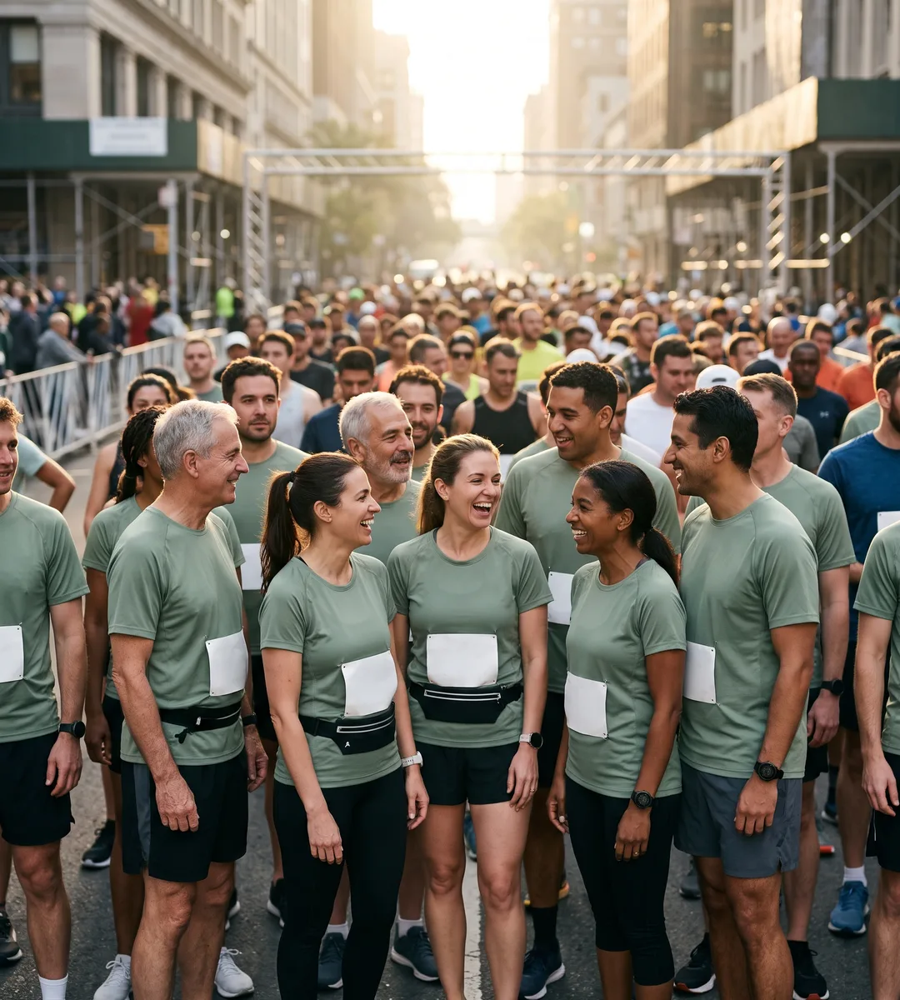
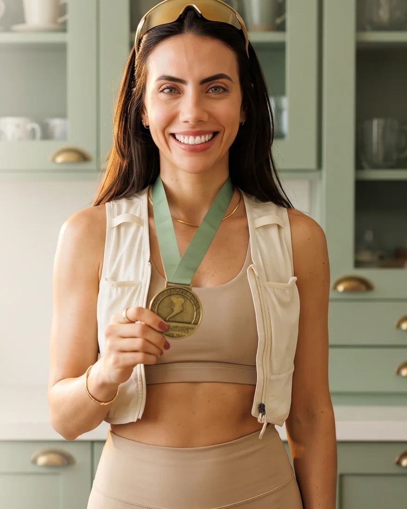
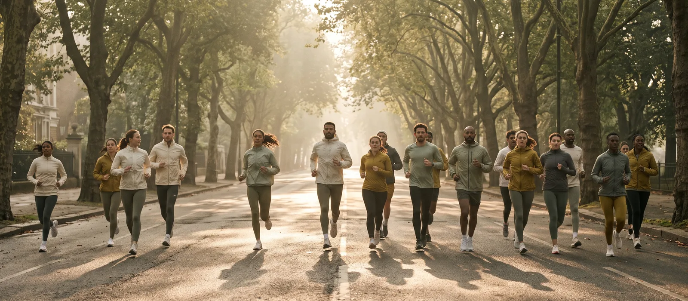
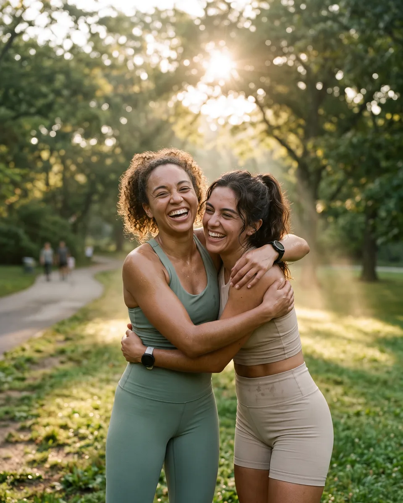
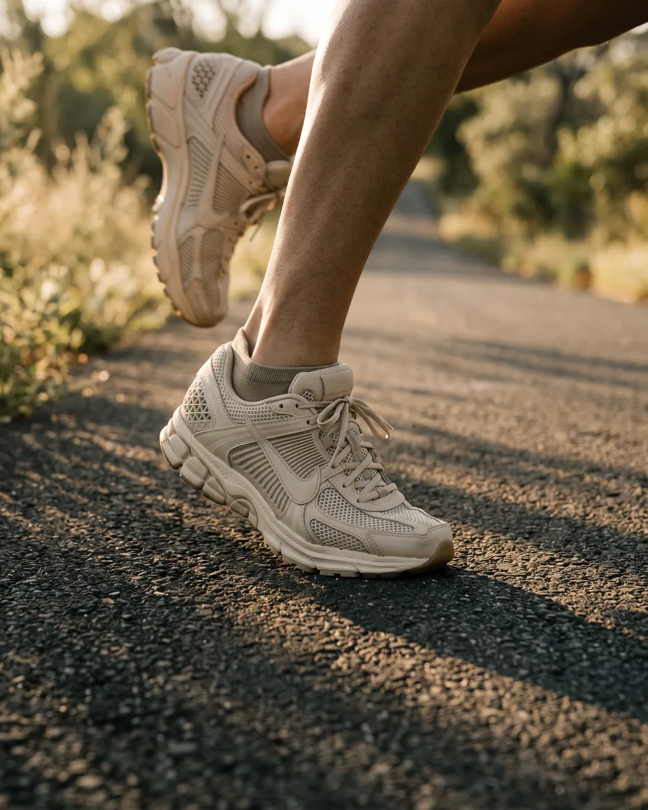

01
Quero começar a correr do zero
Você nunca correu ou corre dois minutos e já perde o fôlego, e não sabe por onde começar sem se machucar.
Wellness club de corrida · Campinas/SP · Treino em grupo
Treinos guiados em grupo, planilha feita para o seu ritmo e cuidado com o corpo fora da pista, para você ganhar constância e chegar à sua próxima prova.
Agendar treino experimentalO primeiro treino serve para conhecer o grupo e o seu ritmo.
A maioria das pessoas para de correr no primeiro mês. Raramente é falta de vontade: é treinar sem plano, sem companhia e sem ninguém olhando a técnica.
Você nunca correu ou corre dois minutos e já perde o fôlego, e não sabe por onde começar sem se machucar.
Sozinho, a chuva, o cansaço e a agenda sempre vencem. Falta um horário fixo e gente esperando por você.
Você já tem uma data em mente (5 km, 10 km ou 21 km) e quer chegar até ela com um plano de treino.
O pace não muda, as dores aparecem e você pensa na maratona, mas não sabe como montar o ciclo.
Em todos esses casos, o que muda o resultado é a mesma coisa: treino com método e gente correndo ao seu lado.
Encontros às terças e quintas às 6h e aos sábados às 7h no Parque Taquaral, com aquecimento, treino do dia e coach acompanhando a técnica de cada grupo de ritmo.

Treino montado para o seu nível e a sua meta, ajustado conforme você evolui, do primeiro 5 km ao ciclo de maratona.

Sessões para quadril, joelho e tornozelo, que ajudam a correr melhor e reduzem o risco das lesões mais comuns da corrida.

Calendário de provas para correr junto, com estratégia de ritmo, tenda do clube e torcida na chegada.
Também no clube: recovery pós-prova, avaliação de pisada e yoga para corredores.
Head coach e fundadora · CREF 012345-G/SP
Sou Luana Carolina, treinadora de corrida. Criei o clube porque vi muita gente desistir de correr sozinha, e quase ninguém desiste quando tem um grupo esperando às 6h da manhã.
Aqui cada aluno tem nome, ritmo e meta. Eu acompanho os treinos de perto, ajusto a planilha e estou na linha de chegada quando você completa a sua prova.

Conte se já corre, quanto corre e qual é a sua meta. A gente responde e indica o melhor horário.
Você vem a um treino do grupo, conhece a coach e a gente observa o seu ritmo e a sua técnica.
Você escolhe o plano, recebe a sua planilha e entra no grupo de treino do clube.
Treinos semanais, ajustes na planilha e a próxima prova marcada no calendário do clube.



Mande uma mensagem dizendo o seu nível e a sua meta. A gente reserva o seu lugar no próximo treino experimental.
Reservar meu treinoTerças e quintas às 6h, sábados às 7h · Parque Taquaral, Campinas/SP
Pode, e boa parte do grupo começou assim. O treino de iniciante alterna caminhada e corrida, e a planilha cresce no seu ritmo.
Recomendamos uma avaliação médica antes de iniciar qualquer treino de corrida, principalmente se você tem mais de 35 anos ou alguma condição de saúde. Para entrar no clube, pedimos um atestado simples liberando a atividade física.
Os planos variam conforme a frequência de treinos e os serviços incluídos. Os valores são enviados pelo WhatsApp, junto com os horários.
Os treinos coletivos acontecem no Parque Taquaral, em Campinas, às terças e quintas às 6h e aos sábados às 7h. Quem não consegue ir presencialmente pode treinar com a planilha online e participar das provas com o grupo.
Conte isso já na primeira mensagem. A planilha é ajustada para o seu caso e o fortalecimento entra desde o início. Dor que persiste deve ser avaliada por um médico ou fisioterapeuta.
Depende do seu ponto de partida, da sua rotina e da constância. Na conversa inicial a coach olha o seu histórico e sugere uma prova realista para a sua primeira meta.